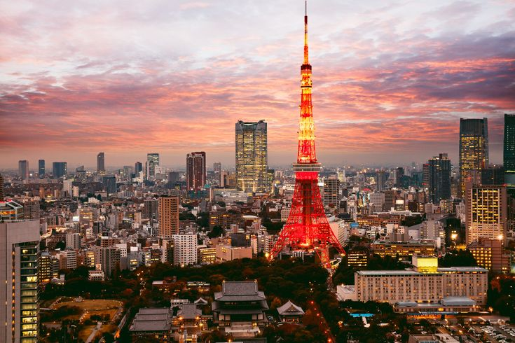

Top Places to Visit
Paris, France
Experience the romance of the Eiffel Tower, charming cafés, and rich history.
Paris, the capital of France, is renowned for its timeless beauty and cultural significance. Known as "The City of Light," it boasts iconic landmarks like the Eiffel Tower, the Louvre Museum, and the Notre-Dame Cathedral. Visitors are often drawn to the city’s art, architecture, and history, making it a must-see destination for travelers from around the world. Paris is also famous for its charming streets, cafes, and boutiques, adding to its romantic appeal.
A trip to Paris is incomplete without indulging in its culinary delights. The city offers a rich gastronomic scene, from classic French pastries like croissants and macarons to gourmet dining in Michelin-starred restaurants. The French cafe culture is a significant part of the Parisian experience, with locals and tourists alike savoring coffee and pastries in the city’s many outdoor cafes. The food culture reflects Paris’ status as a global center for art, culture, and cuisine.
A trip to Paris is incomplete without indulging in its culinary delights. The city offers a rich gastronomic scene, from classic French pastries like croissants and macarons to gourmet dining in Michelin-starred restaurants. The French cafe culture is a significant part of the Parisian experience, with locals and tourists alike savoring coffee and pastries in the city’s many outdoor cafes. The food culture reflects Paris’ status as a global center for art, culture, and cuisine.


Cost of flight ticket
One way
- China Eastern: From $392 USD (approx. NPR 52,000)
- Nepal Airlines: From $434 USD (approx. NPR 57,000)
- SriLankan Airlines: From $438 USD (approx. NPR 57,500)
- Air India: From $549 USD (approx. NPR 72,000)
Tokyo, Japan
A perfect blend of tradition and technology, from temples to neon lights.
Tokyo, Japan's vibrant capital, is a bustling metropolis where tradition meets innovation. The city is famous for its striking skyline, featuring towering skyscrapers like the Tokyo Tower and the Tokyo Skytree, as well as its historical landmarks such as the Senso-ji Temple and the Meiji Shrine. Visitors to Tokyo can experience a fusion of old and new, from ancient temples to cutting-edge technology and modern architecture, making it a dynamic destination for travelers.
Tokyo is a food lover’s paradise, with a rich culinary tradition that extends from sushi and ramen to unique street foods like takoyaki and okonomiyaki. The city's diverse neighborhoods, such as Tsukiji for fresh seafood and Shibuya for trendy eats, offer a wide array of dining options. Tokyo is also home to numerous Michelin-starred restaurants, making it a global hub for fine dining and a place to savor Japan’s gastronomic excellence.
Known for its fashion, shopping, and entertainment, Tokyo is a haven for those seeking the latest trends and unique experiences. Areas like Harajuku, Shinjuku, and Ginza are famous for their vibrant shopping districts, offering everything from high-end fashion to quirky, eclectic styles. The city also boasts a lively nightlife scene, with karaoke bars, clubs, and izakayas providing ample entertainment. Tokyo blends the best of technology, culture, and innovation, offering an unforgettable experience for every visitor.

Cost of flight ticket
One way
- China Eastern: From $344 USD (approx. NPR 45,000)
- Cathay Pacific: From $661 USD (approx. NPR 86,000)
- Nepal Airlines (Direct): From $912 USD (approx. NPR 119,000)
Cape Town, South Africa
Enjoy stunning coastlines, Table Mountain, and vibrant local culture.
Cape Town, located on the southern tip of Africa, is one of the most picturesque cities in the world. Surrounded by stunning natural landscapes, the city is famous for the iconic Table Mountain, the scenic Cape of Good Hope, and its beautiful beaches like Camps Bay and Clifton. Cape Town offers a unique blend of urban energy and natural beauty, making it a dream destination for nature lovers, photographers, and adventure seekers alike.
The city’s cultural diversity is reflected in its history, cuisine, and vibrant communities. From exploring the historical Robben Island to visiting colorful Bo-Kaap, Cape Town tells stories of resilience and rich heritage. The local food scene includes everything from traditional Cape Malay dishes to modern fusion cuisine, often enjoyed in stylish restaurants with ocean or mountain views. Local markets and wine farms also provide a taste of the region’s flavors and traditions.
Cape Town is a gateway to outdoor adventure, offering activities such as hiking, surfing, shark cage diving, and wine tasting in the nearby Cape Winelands. The city's blend of natural wonders, rich history, and diverse culture makes it a truly unforgettable place to visit. Whether you're exploring its rugged coastlines or immersing yourself in local arts and music, Cape Town delivers a travel experience full of warmth, beauty, and discovery.
Cost of flight ticket
One way
- Qatar Airways: Starting from $834 USD (approx. NPR 111,000)
- Nepal Airlines: Starting from NPR 70,346 (approx. $530 USD)
- Singapore Airlines: Starting from $1,174 USD (approx. NPR 156,000)